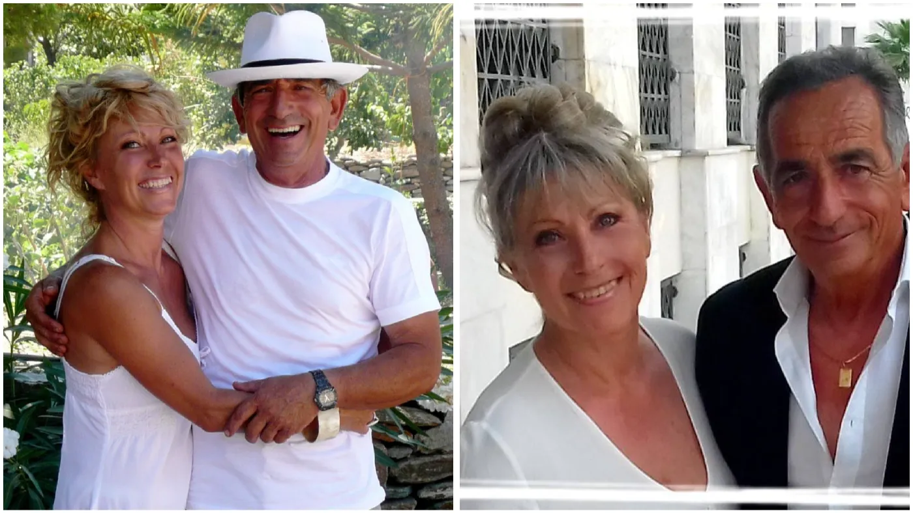
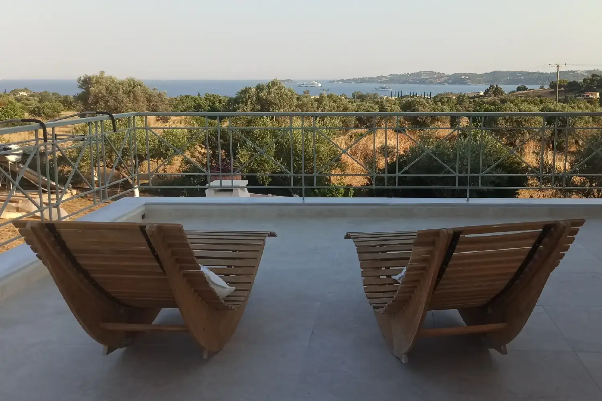

ΠΟΙΟΙ ΕΙΜΑΣΤΕ
Δύο ζωές που συναντήθηκαν
σε έναν ελαιώνα
Η ΙΣΤΟΡΙΑ ΜΑΣ
Ως το τέλος ενός ονείρου
Είμαι Γαλλίδα, από το Μπορντό. Μετά από 17 χρόνια καριέρας στη φαρμακοβιομηχανία, ίδρυσα ένα μεσιτικό γραφείο στην Αρκασόν, κοντά στο Μπορντό. Η αγάπη μου για την Ελλάδα ξεκίνησε πριν από 50 χρόνια και όλα αυτά τα χρόνια μοίραζα τη ζωή μου ανάμεσα στη Γαλλία και την Ελλάδα.
Πάντα είχα στο μυαλό μου να εγκατασταθώ εδώ μόνιμα — και, επειδή πιστεύω ότι πρέπει πάντα να φτάνουμε ως το τέλος των ονείρων μας, το έκανα.
Μου αρέσει να διακοσμώ, να αναπαλαιώνω παλιά έπιπλα, να χαζεύω σε παλαιοπωλεία. Μου αρέσει να μοιράζομαι ένα καλό γεύμα με φίλους, να πίνω ένα καλό κρασί, να ασχολούμαι με τον κήπο, να φτιάχνω μαρμελάδες, τη φωτογραφία… με λίγα λόγια, είμαι πάντα σε δράση.
Είχα την τύχη να γνωρίσω τον Γιώργο, που γεννήθηκε στην Κέα — είναι λοιπόν Τζιώτης. Είναι μελισσοκόμος τρίτης γενιάς. Μαζί μεγαλώσαμε και διακοσμήσαμε με φροντίδα το δεύτερο σπίτι μας στην Πετροθάλασσα, 6 χλμ. από την Ερμιόνη. Βρίσκεται σε ένα προνομιακό σημείο που έχει μείνει άγριο και ανέγγιχτο, και μοιραζόμαστε τη χαρά να υποδεχόμαστε επισκέπτες.
Ο Γιώργος είναι λάτρης της ιστορίας και, φυσικά, μελισσoκόμoς. Δυστυχώς δεν μιλά ούτε αγγλικά ούτε γαλλικά. Όμως στην Ελλάδα είμαστε πολύ δεμένoι μe τη λέξη φιλοξενία — και έτσι όλα γίνονται πιο εύκολα.

